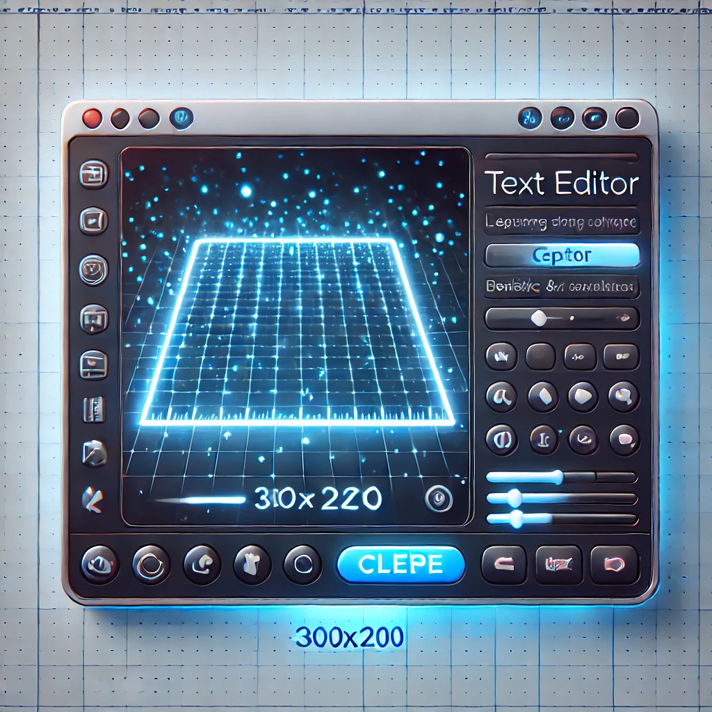
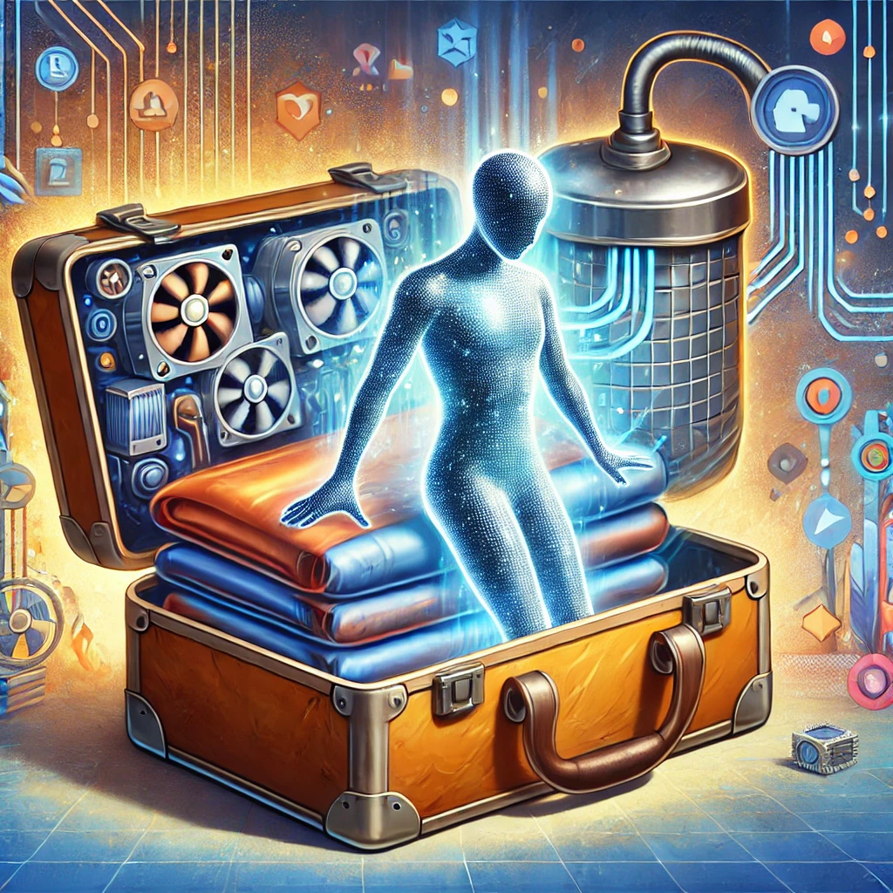
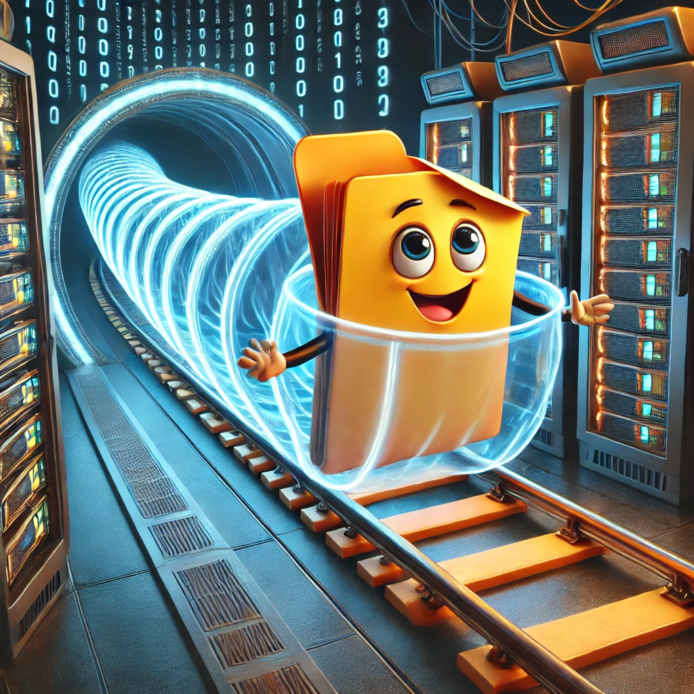

Привіт! Я хочу розповісти вам свою історію. Я - звичайний файл, але моє життя сповнене неймовірних пригод. Все почалося одного ранку в текстовому редакторі...
🚀 Пригоди маленького файлу 💫

Спочатку я був просто порожнім документом, без імені та змісту. Але потім чарівні пальці користувача почали танцювати на клавіатурі. З кожним натисканням клавіші я відчував, як наповнююся життям. Літера за літерою, слово за словом - я перетворювався на справжню історію. "Клац-клац-клац" - звучала клавіатура, і кожен звук додавав мені нового змісту.
Коли історія була завершена, сталося щось дивовижне. Я відчув, як перетворююся на щось зовсім інше. Усі мої літери, розділові знаки та пробіли раптом перетворилися на довгі ланцюжки нулів та одиниць. Це було наче магія! Тепер я розмовляв мовою комп'ютерів - двійковим кодом.

Але на цьому мої пригоди тільки починалися. Виявилося, що я займаю забагато місця, тому мене відправили до спеціального пристрою, який називається "компресор". Це було схоже на те, як складають одяг у валізу перед подорожжю - мене акуратно "склали", прибрали всі зайві "повітряні бульбашки", і я став набагато компактнішим!

Після цього мене чекав ще один сюрприз - мене запакували в захисний архів, немов у теплу ковдру. Тепер я був повністю готовий до подорожі! І яка це була подорож! Мене відправили через інтернет, і я помчав, наче на швидкісному потязі, через десятки серверів та тисячі кілометрів кабелів.
Я мчав через оптоволоконні магістралі, перестрибував з сервера на сервер, подорожував через маршрутизатори та комутатори. Це було неймовірно захоплююче! Я відчував себе космонавтом, який подорожує через цифровий космос.

Нарешті я досяг свого пункту призначення. Мене обережно розпакували з архіву, розгорнули моє стиснення, і я знову перетворився на звичайний текстовий файл. Комп'ютер прочитав мій код, і моя історія знову ожила на екрані.
Але знаєте що? Моя подорож на цьому не закінчилася! Я можу бути відредагованим, зміненим, знову стиснутим та відправленим у нову подорож. Кожного дня мене можуть відкрити, прочитати, зберегти або переслати далі.

І я не один такий - нас мільйони файлів, і кожен має свою унікальну історію. Ми зберігаємо ваші спогади, допомагаємо в роботі, розважаємо вас і навчаємо. Ми - маленькі, але важливі частинки величезного цифрового світу.
Тож наступного разу, коли ви відкриваєте файл на своєму комп'ютері, пам'ятайте - у кожного з нас є своя історія, і ми завжди готові до нових пригод!